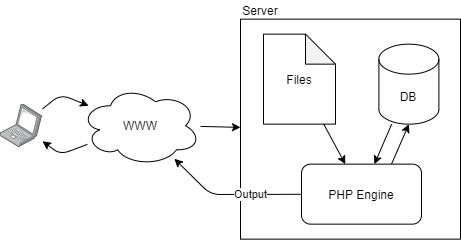

PHP
PHP hypertext processor is an embedded scripting language heavilly used on the web. It runs server-side (never on the client) embedded within a document. Running through the PHP engine scripts are outputted as text, returned as parts of an html document.
We can include multiple PHP files within one another, similar to packages or header files. We can do so using the require and include methods:
require("myfile")- includesmyfileand crashes early if it is not found.include("myfile")- includesmyfileand raises a warning if not found.require_once("myfile")- includesmyfileonly once throughout the file to avoid duplicated definitions, crashing if not found.

Fundamentals
PHP can be embedded within a document using:
<?php ... ?>
<script language="php"> ... </script>
- PHP is generally c-sytanx like, php statements are delimited with
; - Comments are applicable with
//or#or/* ... */ - PHP has a unique contains a unique string concatenation operator
.
Datatypes
All variables in php other than constants start with a $. PHP is dynamically typed and are not declared without initialization (this allows the initial type to be set). Constants are defined with the define method:
define("NAME", "test");
define("AGE", -1);
define("ALIEN", false);
echo NAME." is ".AGE." and is an alien? ".ALIEN;
Strings in php can substitute varaibles without concatenation, ' delimit literal strings whilts " delimit standard strings:
$x = 100;
echo "x is $x"; //x is 100
echo 'x is $x'; //x is $x
PHP supports primitive and complex types. Reference support allows PHP to create objects and other data strcutures such as arrays. Arrays are a built in construct:
$my_array = array(1,2,3);
$my_cool_array = [4,5,6];
$my_fake_array = ["a"=>7,"b"=>8];
$my_concatenated_array = $my_array + $my_cool_array;
for($i = 0; $i < count($my_array); ++$i) { echo $my_array[$i]." "; }
foreach($my_cool_array as $i) { echo "$i "; }
echo $my_fake_array["a"]." ".$my_fake_array["b"];
//prints: 1 2 3 4 5 6 7 8
Additionally PHP contains pre-defined varaibles such as $_GET and $_POST.
Primitives
| Type | Description |
|---|---|
| String | Text |
| Integer | Numeric data |
| Float | Double floating point numeric data |
| Boolean | True and false |
| NULL | Absence of data |
Functions
Functions in PHP do not need to define a return type:
function my_function ($my_param) {
echo $my_param;
return $my_param;
}
Operators
Since PHP is dynamically typed equality can be either strict or not:
- Strict equality: operands are of equal value and type
1 === 1 - Non-strict equality: operands are of equal value
"1" == 1
Arrays
PHP has a variety of inbuilt features to work with arrays.
| Array function | Description |
|---|---|
array_shift() |
dequeue |
array_unshift() |
enqueue |
array_pop() |
pop |
array_push() |
push |
array_splice() |
replace a range of elements |
in_array() |
contains |
array_search() |
finds the index of a value |
array_key_exists() |
contains key |
array_slice() |
returns a range of an array |
sort() |
sort |
rsort() |
reverse sort |
ksort() |
sort map |
krsort |
reverse sort map |
- Multidimensional arrays can be constructed as in c style languages, by nesting multiple arrays. They are indexed traditionally as well.
- Associative arrays (maps) are constructed like:
["key"=>"value"]and indexed by key (["key"])
Iterating associative arrays:
foreach($map as $key=>$value) {
echo $key.", ".$value;
}
PHP also exposes unique associative arrays called superglobals containing various environment variables, including but not limited to:
$_GET$_POST$_ENV$_COOKIE
Strings
Strings are integral to PHP as philosophically it is a text processor. There are no character data types other than strings.
- String operators, such as
., also have assignment operators such as.=. - Strings can explicity include varaibles by encompassing them in
{}parenthesis.
$vegetable = "carrot";
#error
echo "I like $vegetables";
#ok
echo "I like {$vegetable}s";
Strings also contain many utility functions:
| String function | Description |
|---|---|
strcmp |
string comparison, such as strcmp in c |
strcasecmp |
case agnostic string comparison |
strlen |
string length |
strpos |
returns index of substring |
substr |
returns a substring of the given string |
str_replace |
replaces a substring with another |
strtok |
creates a string tokeniser, returning the first token |
explode |
create array from string characters |
implode |
concatenate arrays into a string |
str_split |
delimit a string into an array |
Regular Expressions
Defining patterns of text.
PHP uses perl compatible regular expressions. A regular expression is enclosed in a string like so "/.../". The preg prefix identify php regular expression functions, such as:
preg_matchto match expressionspreg_replaceto replace based on expressionspreg_splitto delimit based on expressions
Some regular expression tokens include:
| Token | Description |
|---|---|
\w |
[A-Za-z0-9] |
^ |
Start of string |
$ |
End of string |
? |
Match 0 or 1 character |
+ |
Match 1 or more characters |
* |
Match 0 or more characters |
(a|b) |
a or b |
(...) |
Group of tokens |
[abc] |
Match any of a, b, or c |
[^abc] |
Not any of a, b, or c |
[a-z] |
Match range |
\d |
Match a digit |
\s |
Match a space or tab |
{3} |
Match 3 times |
{3,} |
Match 3 or more times |
{3,6} |
Match 3 to 6 times |
!() |
Negate group - do not match |
A Note on MYSQL Databases
PHP provides a n API to connect to MYSQL databases in the standard library named mysqli
Managing State Information
State information: information about a visit to a web site shared over a set of user-server interactions.
HTTP is stateless, web browsers store no persistent data about visists by themselves. Maintaining state requires temporary/persistent storage of user data which can be sent between a client and server.
Hidden Form Fields
A type of temprary storage where hidden form fields embed state information. Once the form is submitted the request to the server will contain the embedded parameters. This invovles a server preparing a form by placing information in inputs of the hidden type and then processing them when the user resubmits them.
A form will resubmit the exact same information embedded into them, hence the server must process the state before placing them in the form.
<input type="hidden"/>
Query Strings
A form of temporary storage where state information is stored as HTTP paramaters in a GET request. A server will rewrite URLs included in a web page to contain the state information. PHP provides http_build_query to build a query string from an array of properties.
Cookies
Cookies are persistent storage capable of storing state beyond a single session. Cookies are stored on the client and it is advised to keep their size under 4KB (browsers usually limit cookie sizes based on RFC 6265). Additionally a browser can usually accomodate 50 cookies per site.
set_cookie(...);
$_COOKIE['my property'];
A cookie with no expiration time is temporary which are not stored beyond the user session.
Sessions
Sessions are high-level concepts that provide a period of time where state is stored on the server. PHP will apply the previously discussed methods to provide session storage, and are generally helpful to abstract away the implementation of persiting state information. A session is identified by a session ID.
session_start(); //start/continue
$_SESSION['my property'];
$_COOKIE['PHPSESSID'] //session ID stored in cookie for us
session_destroy(); //kill
OOP in PHP
PHP is an object oriented scripting language. Classses support encapsulation and instance or class members. PHP predefines “magic” methods for classes, these are constructs such as constructors, destructors, toString methods etc.
Classes are instantiated with the new keyword which returns a reference. A pointer is dereferenced with ->. Whilst inside an instance method $this is used to obtain a reference to the current instance, unlike other languages all instance state must be derefrenced through this pointer.
$c = new MyClass(); //instantiate
$c->x; //get varaible x from c
$c->print(); //invoke print in c
//helpers
is_a()
instanceof
unset() //delete reference
serialize()
unserialize()
class MyClass {
public $x; //encapsualtion (or lack of it in this case)
function __construct() {} //constructor
function __destruct() {} //desctructor
function __sleep() {} //how to serialize
function print() {
echo $this->x; //need `$this`
}
}